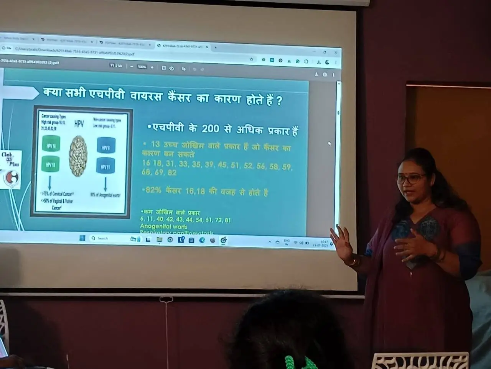

🌸 महिला स्वास्थ्य शिविर संगोष्ठी 🌸
✅ WOMEN HEALTH AWARENESS & TREATMENT SOLUTION AVAILABLE PROGRAM
आज दिनांक 21 जुलाई 2025 को सरस्वती ज्ञान मंदिर विद्यालय, आजाद नगर, कानपुर में महिला स्वास्थ्य शिविर संगोष्ठी का सफल आयोजन किया गया। इस विशेष कार्यक्रम में कानपुर मेडिकल कॉलेज की वरिष्ठ महिला चिकित्सक डॉ. गरिमा गुप्ता जी (MS Gynaecologist) ने मुख्य वक्ता के रूप में महिलाओं को स्वास्थ्य के प्रति जागरूक किया एवं उपयोगी सलाह दी।
कार्यक्रम का उद्देश्य महिलाओं की दैनिक स्वास्थ्य समस्याओं की जानकारी, स्वास्थ्य परीक्षण, एवं सही उपचार को लेकर जागरूकता फैलाना था।
💖 संगोष्ठी में विद्यालय के अध्यापिकाओं के साथ छात्राओं को भी जानकारी दी गई।
💖 संगोष्ठी का मुख्य उद्देश्य महिलाओं में होने वाली सर्वाइकल कैंसर के प्रति जागरूकता प्रदान करना था।
सौजन्य: सरस्वती ज्ञान मंदिर विद्यालय, आजाद नगर, कानपुर | निवेदक: GRS हॉस्पिटल (हृदय एवं जच्चा-बच्चा अस्पताल), अशोक नगर, कानपुर
#महिलास्वास्थ्य #HealthAwareness #SaraswatiGyanMandir #GRSHospital #KanpurEvents #WomenWellness